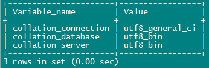

- AQS 万字图文全面解析.md.html
- Docker 镜像构建原理及源码分析.md.html
- ElasticSearch 小白从入门到精通.md.html
- JVM CPU Profiler技术原理及源码深度解析.md.html
- JVM 垃圾收集器.md.html
- JVM 面试的 30 个知识点.md.html
- Java IO 体系、线程模型大总结.md.html
- Java NIO浅析.md.html
- Java 面试题集锦（网络篇）.md.html
- Java-直接内存 DirectMemory 详解.md.html
- Java中9种常见的CMS GC问题分析与解决（上）.md.html
- Java中9种常见的CMS GC问题分析与解决（下）.md.html
- Java中的SPI.md.html
- Java中的ThreadLocal.md.html
- Java线程池实现原理及其在美团业务中的实践.md.html
- Java魔法类：Unsafe应用解析.md.html
- Kafka 源码阅读笔记.md.html
- Kafka、ActiveMQ、RabbitMQ、RocketMQ 区别以及高可用原理.md.html
- MySQL · 引擎特性 · InnoDB Buffer Pool.md.html
- MySQL · 引擎特性 · InnoDB IO子系统.md.html
- MySQL · 引擎特性 · InnoDB 事务系统.md.html
- MySQL · 引擎特性 · InnoDB 同步机制.md.html
- MySQL · 引擎特性 · InnoDB 数据页解析.md.html
- MySQL · 引擎特性 · InnoDB崩溃恢复.md.html
- MySQL · 引擎特性 · 临时表那些事儿.md.html
- MySQL 主从复制 半同步复制.md.html
- MySQL 主从复制 基于GTID复制.md.html
- MySQL 主从复制.md.html
- MySQL 事务日志(redo log和undo log).md.html
- MySQL 亿级别数据迁移实战代码分享.md.html
- MySQL 从一条数据说起-InnoDB行存储数据结构.md.html
- MySQL 地基基础：事务和锁的面纱.md.html
- MySQL 地基基础：数据字典.md.html
- MySQL 地基基础：数据库字符集.md.html
- MySQL 性能优化：碎片整理.md.html
- MySQL 故障诊断：一个 ALTER TALBE 执行了很久，你慌不慌？.md.html
- MySQL 故障诊断：如何在日志中轻松定位大事务.md.html
- MySQL 故障诊断：教你快速定位加锁的 SQL.md.html
- MySQL 日志详解.md.html
- MySQL 的半同步是什么？.md.html
- MySQL中的事务和MVCC.md.html
- MySQL事务_事务隔离级别详解.md.html
- MySQL优化：优化 select count().md.html
- MySQL共享锁、排他锁、悲观锁、乐观锁.md.html
- MySQL的MVCC（多版本并发控制）.md.html
- QingStor 对象存储架构设计及最佳实践.md.html
- RocketMQ 面试题集锦.md.html
- SnowFlake 雪花算法生成分布式 ID.md.html
- Spring Boot 2.x 结合 k8s 实现分布式微服务架构.md.html
- Spring Boot 教程：如何开发一个 starter.md.html
- Spring MVC 原理.md.html
- Spring MyBatis和Spring整合的奥秘.md.html
- Spring 帮助你更好的理解Spring循环依赖.md.html
- Spring 循环依赖及解决方式.md.html
- Spring中眼花缭乱的BeanDefinition.md.html
- Vert.x 基础入门.md.html
- eBay 的 Elasticsearch 性能调优实践.md.html
- 不可不说的Java“锁”事.md.html
- 互联网并发限流实战.md.html
- 从ReentrantLock的实现看AQS的原理及应用.md.html
- 从SpringCloud开始，聊微服务架构.md.html
- 全面了解 JDK 线程池实现原理.md.html
- 分布式一致性理论与算法.md.html
- 分布式一致性算法 Raft.md.html
- 分布式唯一 ID 解析.md.html
- 分布式链路追踪：集群管理设计.md.html
- 动态代理种类及原理，你知道多少？.md.html
- 响应式架构与 RxJava 在有赞零售的实践.md.html
- 大数据算法——布隆过滤器.md.html
- 如何优雅地记录操作日志？.md.html
- 如何设计一个亿级消息量的 IM 系统.md.html
- 异步网络模型.md.html
- 当我们在讨论CQRS时，我们在讨论些神马？.md.html
- 彻底理解 MySQL 的索引机制.md.html
- 最全的 116 道 Redis 面试题解答.md.html
- 有赞权限系统(SAM).md.html
- 有赞零售中台建设方法的探索与实践.md.html
- 服务注册与发现原理剖析（Eureka、Zookeeper、Nacos）.md.html
- 深入浅出Cache.md.html
- 深入理解 MySQL 底层实现.md.html
- 漫画讲解 git rebase VS git merge.md.html
- 生成浏览器唯一稳定 ID 的探索.md.html
- 缓存 如何保证缓存与数据库的双写一致性？.md.html
- 网易严选怎么做全链路监控的？.md.html
- 美团万亿级 KV 存储架构与实践.md.html
- 美团点评Kubernetes集群管理实践.md.html
- 美团百亿规模API网关服务Shepherd的设计与实现.md.html
- 解读《阿里巴巴 Java 开发手册》背后的思考.md.html
- 认识 MySQL 和 Redis 的数据一致性问题.md.html
- 进阶：Dockerfile 高阶使用指南及镜像优化.md.html
- 铁总在用的高性能分布式缓存计算框架 Geode.md.html
- 阿里云PolarDB及其共享存储PolarFS技术实现分析（上）.md.html
- 阿里云PolarDB及其共享存储PolarFS技术实现分析（下）.md.html
- 面试最常被问的 Java 后端题.md.html
- 领域驱动设计在互联网业务开发中的实践.md.html
- 领域驱动设计的菱形对称架构.md.html
- 高效构建 Docker 镜像的最佳实践.md.html
MySQL 地基基础：数据库字符集
字符集简介
字符是各种文字和符号的总称，而字符集是多个字符的集合。
字符集分类与特点
字符包含有国家文字、标点符号、图形符号、数字等内容，字符集是多个字符的集合，字符集种类非常多，每种字符集包含的字符个数是不相同的。比如说，国家文字不同，就会使用各自国家通用字符集，这样是不是好理解一些。
常见字符集分类
- ASCII（American Standard Code for Information Interchange，美国信息互换标准编码）：是基于罗马字母表的一套电脑编码系统，一个字节表示一个字符。
- LATIN1：ASCII 字符集的扩充，仍然使用一个字节表示一个字符。
- GB2312（信息交换用汉字编码字符集·基本集）：中国国家标准的简体中文字符集，基本满足了汉字的计算机处理需要，分区表示，双字节表示一个字符。
- GB18030（信息交换用汉字编码字符集基本集的扩充）：是 GB2312 的扩充，更全面，兼容 Unicode 3.0 和 GB2312。
- UTF-8（Unicode Tranformation Format）：是 Unicode 的其中一个使用方式，支持所有国家字符集，使用 1-4 个字节表示一个字符。
字符集有很多，这里不一一列举。想要获取全部支持字符集，可以在库中查看，详见下文。
字符集特点
- 不同的编码方式，最终解释为不同的机器语言（二进制）
- 不同的表示方式，使用 1 个或者多个字节表示一个字符
MySQL 与字符集之间亲密关系
首先我们想一下，数据库是做什么的？数据库是存放数据的环境。这些数据库是如何保存的？拍拍脑袋一想，肯定不是原封不动的存放的，数据库不同于我们的大脑，它的思维能力甚至不如阿猫阿狗，它只能读懂 0 和 1，那么数据库存储的数据，其实就是一串串的 0 和 1 的组合，那么按照什么规则定义这些 0 和 1 呢？重点来了，数据库需要在字符集中找到对应的数据编码，然后存储的是这些编码。
MySQL 字符集包括字符集（character）和校对规则（collation），字符集用来定义存储字符串的方式，校队规则定义比较字符串的方式。字符集和校对规则是一对多的关系，每个字符集至少对应一个校对规则。后面我们在具体说说校对规则。
MySQL 在底层存储上有四个级别的字符集设置，分别是：服务器级、数据库级、表级、列级。字符集优先级是：列字符集 > 表字符集 > 数据库字符集 > 服务器字符集，其中最常用的是表级和数据库级字符集。列级字符集最优先，但是一般不单独设置，使其继承表级字符集。
获取所有数据库字符集：
mysql> show character set;
或者
mysql> select * from information_schema.character_sets;
获取所有数据库校对规则：
mysql> show collation;
或者
mysql> select * from information_schema.collations;
字符集编码原理
在客户端和服务器端之期间的数据请求与反馈，会经历一系列的转换，从而保证数据的正确无误无乱码，下面具体说一下这个请求的过程。
\1. MySQL client 发送请求（字符集为 character_set_client） character_set_client 就是客户端字符集。
\2. MySQL Server 收到请求，将请求数据从 character_set_client 转换为 character_set_connection 通常情况下 character_set_connection 字符集同 character_set_client 字符集一致。
\3. MySQL Server 将请求数据从 character_set_connection 转换为内部操作字符集。
何为内部操作字符集，其实就是前面说的列字符集、表字符集、数据库字符集、服务器字符集这四个。这一步操作会使用每个数据字段的 CHARACTER SET 设定值：
- 如果 CHARACTER SET 不存在，使用表字符集
- 如果表字符集不存在，使用数据库字符集
- 如果数据库字符集不存在，使用服务器字符集
\4. MySQL Server 将操作结果从内部操作字符集转换为 character_set_results character_set_results 就是结果内容的字符集。
字符集与校对规则分析
前面我们已经说了说字符集和校对规则的关系。接下来我们具体分析分析它们。
查看数据库字符集：
mysql> show variables like 'character%';
参数解释：
- character_set_client：客户端使用的字符集
- character_set_connection：客户端和服务端连接层字符集
- character_set_database：默认数据库字符集 ，如没有默认数据库，会用 character_set_server 指定的字符集，建议由系统自动管理
- character_set_filesystem：把 os 上文件名转化成此字符集，把 character_set_client 转换 character_set_filesystem， 默认 binary 是不做任何转换
- character_set_results：结果字符集
- character_set_server：数据库服务器字符集
- character_set_system：操作系统字符集，无需设置，总是 utf8
DDL 字符集选择：
- 建库操作，未指定数据库字符集，继承数据库服务器字符集
- 建表操作，未指定表字符集，继承当前库字符集
- 新增字段，未指定列字符集，继承表字符集
- 修改字段，未指定列字符集，继承表字符集
DML 字符集选择：
- 插入、更新数据，由 character_set_client 转换为 character_set_connection 再转换为表字符集
查看字符集校对规则：
mysql> show variables like 'collation%';

参数说明：
- collation_connection：当前连接的字符集校对规则
- collation_database：当前数据库默认校对规则
- collation_server：当前数据库服务器默认校对规则
字符集和校对规则：
- 每个字符集至少有一个校对规则
- 每个字符集有一个默认的校对规则
- 每个校对规则只能属于一个字符集
校对规则命名
字符集名称_语言_后缀，其中后缀有三种写法：
- _ci：不区分大小写
- _cs：区分大小写
- _bin：二进制
如何更改 MySQL 字符集
更改数据库字符集：
alter database db1 default character set utf8;
更改数据库表的字符集：
alter table tab1 default character set utf8;
把表默认的字符集和所有字符列改为新的字符集（例如 utf8）：
alter table tab1 convert to character set utf8;
前面的操作转换了字符集之间的列类型。如果有一列使用一种字符集（如 latin1），但是存储的值实际上使用了其它的字符集（如 utf8），这种情况不是你想要的，进行如下操作就可以解决你的问题。
alter table tab1 change 字段 1 字段 2 类型；
alter table tab1 change 字段 2 字段 2 类型 character set utf8;
字符集最佳实践
MySQL 数据库字符集和校对规则有 4 个级别：服务器级、数据库级、表级、字段级，下面我们重点讲解及用实例操作来实践。
服务器级设置字符集
方式一
在 MySQL 配置文件 my.cnf 中进行配置设置：
[mysqld]
default-character-set=gbk
方式二
在启动 MySQL 时设置：
mysqld --default-character-set=gbk
方式三
在源码编译时指定，如果未指定，默认使用 latin1：
./configure --with-charcter=gbk
数据库级设置字符集
- 创建数据库时指定字符集（create database ... ）
- 修改数据库时修改字符集（alter database ...）
注：对于已经存在的数据修改字符集无效。
表级设置字符集
- 创建表时指定字符集（create table ...）
- 修改表时修改字符集（alter table ...）
注：对于已经存在的数据修改字符集无效。
列级设置字符集
- 创建表时指定列字符集（create table ...）
- 修改表时修改列字符集（alter table ...）
注：对于已经存在的数据修改字符集无效。
细心的朋友应该已经注意到了，以上这种修改是不适用于已经存在的数据的，如果表中已经存在数据了，那么我们怎样修改字符集呢？不要着急，后面会一步一步的教你如何实现。
首先我们先实例说一下如何设置字符集。
1. 为数据库设置字符集和校对规则
设置数据库字符集：
create database db1 default character set utf8;
设置数据库校对规则：
create database db1 default character set utf8 collate utf8_bin;
说明：
- 如果指定了字符集和校对规则，则使用指定的
- 如果指定了字符集未指定校对规则，则使用指定字符集和默认校对规则
- 如果未指定字符集和校对规则，则使用服务器字符集和校对规则
2. 为表设置字符集和校对规则
设置表字符集：
create table tab1(column1 varchar(5)) default character set utf8;
设置表校对规则：
create table tab1(column1 varchar(5)) default character set utf8 collate utf8_bin;
说明：
- 如果指定了字符集和校对规则，则使用指定的
- 如果指定了字符集未指定校对规则，则使用指定字符集和默认校对规则
- 如果未指定字符集和校对规则，则使用数据库字符集和校对规则
3. 为列设置字符集和校对规则
设置列字符集：
create table tab1(column1 varchar(5) character SET utf8);
设置列校对规则：
create table tab1(column1 varchar(5) character set utf8 collate utf8_bin);
说明：
- 如果指定了字符集和校对规则，则使用指定的
- 如果指定了字符集未指定校对规则，则使用指定字符集和默认校对规则
- 如果未指定字符集和校对规则，则使用表字符集和校对规则
4. 如何处理带数据的字符集
当表中已经存在数据，直接更改字符集，不会更改既有的数据字符集，我们需要先将数据导出，调整字符集再导入。
第一步：导出表结构
mysqldump -uroot -p --default-character-set=gbk -d db1> createtab.sql
第二步：修改表字符集
编辑修改 createtab.sql 文件，将表结构定义中的字符集改为新的字符集。
第三步：导出所有数据
mysqldump -uroot -p --quick --no-create-info --extended-insert --default-character-set=latin1 db1> data.sql
第四步：修改数据字符集
编辑修改 data.sql，将 set names latin1 修改成 set names gbk。
第五步：创建数据库
create database db1 default charset gbk;
第六步：创建表
mysql -uroot -p db1 < createtab.sql
第七步：导入数据
mysql -uroot -p db1 < data.sql